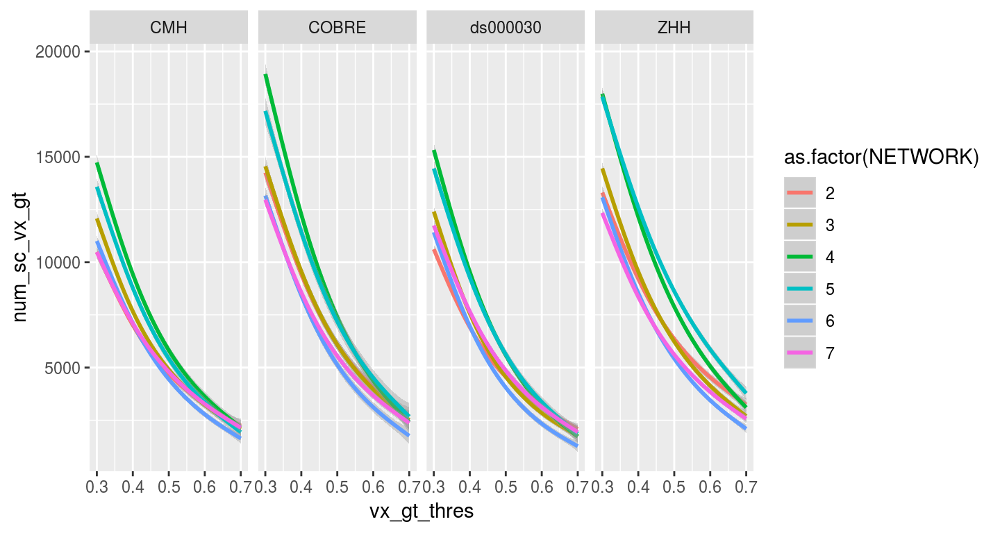
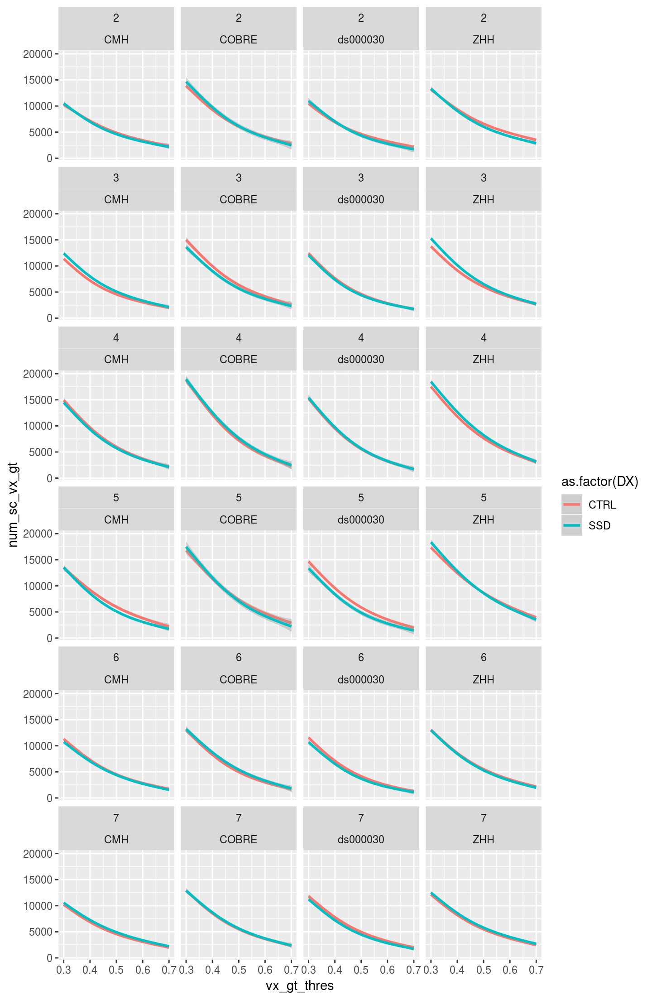
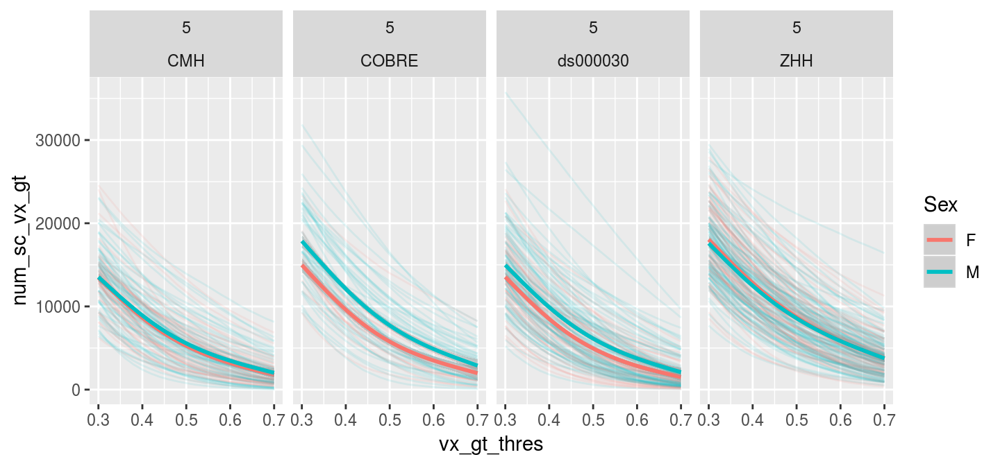
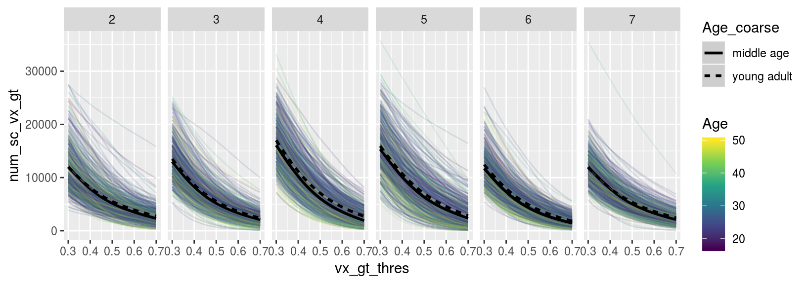

Chapter 6 Seedcorr Area Stats
library(tidyverse)## ── Attaching packages ──────────────────────────────────────────────────────────────────────────────────────────────────────────────────── tidyverse 1.2.1 ──## ✔ ggplot2 3.1.0 ✔ purrr 0.2.5
## ✔ tibble 2.0.1 ✔ dplyr 0.8.0.1
## ✔ tidyr 0.8.2 ✔ stringr 1.3.1
## ✔ readr 1.3.0 ✔ forcats 0.3.0## ── Conflicts ─────────────────────────────────────────────────────────────────────────────────────────────────────────────────────── tidyverse_conflicts() ──
## ✖ dplyr::filter() masks stats::filter()
## ✖ dplyr::lag() masks stats::lag()library(broom)
library(here)## here() starts at /mnt/tigrlab/projects/edickie/code/SZ_PINT6.1 The paths to data
source(here('code/R/settings_helpers.R'))
Yeo7_2011_80verts <- read_Yeo72011_template()
YeoNet_colours = define_Yeo7_colours()
pheno <- read_pheno_file() %>% drop_na(DX)## Parsed with column specification:
## cols(
## .default = col_double(),
## dataset = col_character(),
## subject_id = col_character(),
## session_id = col_character(),
## task_id = col_character(),
## run_id = col_character(),
## acq_id = col_character(),
## subject = col_character(),
## session = col_character(),
## cmh_session_id = col_character(),
## DX = col_character(),
## Sex = col_character(),
## Site = col_character(),
## Scanner = col_character(),
## isFEP = col_character(),
## ghost_NoGhost = col_character(),
## filename = col_character()
## )## See spec(...) for full column specifications.pint_sc <- read_csv(file.path(output_base, 'qa_passes_seedcor_counts_20181116.csv'))## Warning: Missing column names filled in: 'X1' [1]## Warning: Duplicated column names deduplicated: 'index' => 'index_1' [7]## Parsed with column specification:
## cols(
## .default = col_double(),
## dataset = col_character(),
## subject = col_character(),
## session = col_character(),
## filename = col_character()
## )
## See spec(...) for full column specifications.pint_sc %>%
anti_join(pheno, by = c("subject", "dataset"))## # A tibble: 12 x 29
## X1 index dataset subject session filename index_1 NETWORK gt_0.30
## <dbl> <dbl> <chr> <chr> <chr> <chr> <dbl> <dbl> <dbl>
## 1 2292 382 COBRE sub-A0… ses-20… sub-A00… 2292 2 15241
## 2 2293 382 COBRE sub-A0… ses-20… sub-A00… 2293 3 10223
## 3 2294 382 COBRE sub-A0… ses-20… sub-A00… 2294 4 16854
## 4 2295 382 COBRE sub-A0… ses-20… sub-A00… 2295 5 18930
## 5 2296 382 COBRE sub-A0… ses-20… sub-A00… 2296 6 15772
## 6 2297 382 COBRE sub-A0… ses-20… sub-A00… 2297 7 13304
## 7 2298 383 COBRE sub-A0… ses-20… sub-A00… 2298 2 12894
## 8 2299 383 COBRE sub-A0… ses-20… sub-A00… 2299 3 19799
## 9 2300 383 COBRE sub-A0… ses-20… sub-A00… 2300 4 16902
## 10 2301 383 COBRE sub-A0… ses-20… sub-A00… 2301 5 20600
## 11 2302 383 COBRE sub-A0… ses-20… sub-A00… 2302 6 19045
## 12 2303 383 COBRE sub-A0… ses-20… sub-A00… 2303 7 19976
## # … with 20 more variables: gt_0.32 <dbl>, gt_0.34 <dbl>, gt_0.36 <dbl>,
## # gt_0.38 <dbl>, gt_0.40 <dbl>, gt_0.42 <dbl>, gt_0.44 <dbl>,
## # gt_0.46 <dbl>, gt_0.48 <dbl>, gt_0.50 <dbl>, gt_0.52 <dbl>,
## # gt_0.54 <dbl>, gt_0.56 <dbl>, gt_0.58 <dbl>, gt_0.60 <dbl>,
## # gt_0.62 <dbl>, gt_0.64 <dbl>, gt_0.66 <dbl>, gt_0.68 <dbl>,
## # gt_0.70 <dbl>pheno %>%
anti_join(pint_sc, by = c("subject", "dataset"))## # A tibble: 3 x 37
## dataset subject_id session_id task_id run_id acq_id fd_mean fd_num
## <chr> <chr> <chr> <chr> <chr> <chr> <dbl> <dbl>
## 1 ds0000… 10365 <NA> rest <NA> <NA> 0.118 17
## 2 ZHH 10523 01 rest <NA> <NA> 0.127 11
## 3 ds0000… 10570 <NA> rest <NA> <NA> 0.178 48
## # … with 29 more variables: fd_perc <dbl>, size_t <dbl>, size_z <dbl>,
## # spacing_tr <dbl>, spacing_z <dbl>, subject <chr>, session <chr>,
## # num_rest <dbl>, num_t1w <dbl>, num_scans <dbl>, cmh_session_id <chr>,
## # DX <chr>, Age <dbl>, Sex <chr>, Site <chr>, Scanner <chr>, GRID <dbl>,
## # zhh_session_id <dbl>, MRI_Date <dbl>, Edu <dbl>, isFEP <chr>,
## # ghost_NoGhost <chr>, LSurfArea <dbl>, RSurfArea <dbl>, SurfArea <dbl>,
## # filename <chr>, Age_pt <dbl>, fd_mean_pt <dbl>, SurfArea_pt <dbl>Write a func_base and outputprefix cols into the pheno file for the file reading step
combined_df <- pheno %>%
inner_join(pint_sc, by = c("dataset", "subject", "session")) %>%
gather(gt_name, num_sc_vx_gt, starts_with('gt_')) %>%
mutate(vx_gt_thres = gt_name %>% str_replace('gt_','') %>% parse_double()) %>%
drop_na(num_sc_vx_gt)
combined_df %>% count(subject) %>% nrow()## [1] 4926.2 Known issues
Looks like two people might need to be reprocessed if this works out.
combined_df %>%
drop_na(DX) %>%
group_by(NETWORK, vx_gt_thres) %>%
filter(Age > 17, Age < 51) %>%
filter(vx_gt_thres < 0.6) %>%
do(tidy(aov(lm(num_sc_vx_gt ~ DX*Age_pt + Sex + fd_mean_pt + Scanner + SurfArea_pt,.)))) %>%
ungroup() %>% group_by(term) %>%
mutate(p_FDR = p.adjust(p.value, method = "fdr")) %>%
filter(term != "(Intercept)", term != "Scanner", p_FDR < 0.06) %>%
arrange(NETWORK, term) ## # A tibble: 43 x 9
## # Groups: term [1]
## NETWORK vx_gt_thres term df sumsq meansq statistic p.value p_FDR
## <dbl> <dbl> <chr> <dbl> <dbl> <dbl> <dbl> <dbl> <dbl>
## 1 4 0.3 Age_pt 1 1.53e8 1.53e8 8.86 3.07e-3 1.11e-2
## 2 4 0.32 Age_pt 1 1.60e8 1.60e8 9.96 1.70e-3 8.06e-3
## 3 4 0.34 Age_pt 1 1.68e8 1.68e8 11.2 8.65e-4 5.19e-3
## 4 4 0.36 Age_pt 1 1.72e8 1.72e8 12.5 4.59e-4 3.45e-3
## 5 4 0.38 Age_pt 1 1.74e8 1.74e8 13.8 2.30e-4 1.88e-3
## 6 4 0.4 Age_pt 1 1.76e8 1.76e8 15.3 1.04e-4 9.33e-4
## 7 4 0.42 Age_pt 1 1.74e8 1.74e8 16.8 4.83e-5 4.83e-4
## 8 4 0.44 Age_pt 1 1.72e8 1.72e8 18.5 2.13e-5 2.39e-4
## 9 4 0.46 Age_pt 1 1.68e8 1.68e8 20.1 9.17e-6 1.18e-4
## 10 4 0.48 Age_pt 1 1.62e8 1.62e8 21.9 3.75e-6 5.63e-5
## # … with 33 more rowscombined_df %>%
drop_na(DX) %>%
ggplot(aes(y = num_sc_vx_gt, x = vx_gt_thres, color = as.factor(NETWORK))) +
# geom_line(aes(group = subject), alpha = 0.1) +
geom_smooth() +
facet_wrap(~Site, ncol = 4)## `geom_smooth()` using method = 'gam' and formula 'y ~ s(x, bs = "cs")'
combined_df %>%
drop_na(DX) %>%
ggplot(aes(y = num_sc_vx_gt, x = vx_gt_thres, color = as.factor(DX))) +
# geom_line(aes(group = subject), alpha = 0.1) +
geom_smooth() +
facet_wrap(~NETWORK*Site, ncol = 4)## `geom_smooth()` using method = 'gam' and formula 'y ~ s(x, bs = "cs")'
combined_df %>%
drop_na(DX) %>%
filter(NETWORK == 5) %>%
ggplot(aes(y = num_sc_vx_gt, x = vx_gt_thres, color = Sex)) +
geom_line(aes(group = subject), alpha = 0.1) +
geom_smooth() +
facet_wrap(~NETWORK*Site, ncol = 4)## `geom_smooth()` using method = 'gam' and formula 'y ~ s(x, bs = "cs")'
combined_df %>%
filter(Age > 17, Age < 51) %>%
mutate(Age_decade = case_when(Age < 20 ~ '17-20',
Age >= 20 & Age < 30 ~ '20-30',
Age >= 30 & Age < 40 ~ '30-40',
Age >= 40 & Age < 50 ~ '40-50',
Age > 50 ~ "50 above")) %>%
mutate(Age_coarse = case_when(Age < 30 ~ "young adult",
Age > 35 ~ "middle age")) %>%
drop_na(DX, Age_coarse) %>%
ggplot(aes(y = num_sc_vx_gt, x = vx_gt_thres, color = DX)) +
#geom_line(aes(group = subject), alpha = 0.1) +
geom_smooth(aes(linetype = Age_coarse)) +
facet_wrap(~NETWORK*Site, ncol = 4) ## `geom_smooth()` using method = 'gam' and formula 'y ~ s(x, bs = "cs")'
combined_df %>%
filter(Age > 17, Age < 51) %>%
mutate(Age_decade = case_when(Age < 20 ~ '17-20',
Age >= 20 & Age < 30 ~ '20-30',
Age >= 30 & Age < 40 ~ '30-40',
Age >= 40 & Age < 50 ~ '40-50',
Age > 50 ~ "50 above")) %>%
mutate(Age_coarse = case_when(Age < 30 ~ "young adult",
Age > 35 ~ "middle age")) %>%
drop_na(DX, Age_coarse) %>%
ggplot(aes(y = num_sc_vx_gt, x = vx_gt_thres)) +
geom_line(aes(group = subject, color = Age), alpha = 0.15) +
geom_smooth(aes(linetype = Age_coarse), color = "black") +
scale_color_viridis_c(option = "D") +
facet_grid(DX~NETWORK) ## `geom_smooth()` using method = 'gam' and formula 'y ~ s(x, bs = "cs")'
combined_df %>%
filter(Age > 17, Age < 51) %>%
mutate(Age_decade = case_when(Age < 20 ~ '17-20',
Age >= 20 & Age < 30 ~ '20-30',
Age >= 30 & Age < 40 ~ '30-40',
Age >= 40 & Age < 50 ~ '40-50',
Age > 50 ~ "50 above")) %>%
mutate(Age_coarse = case_when(Age < 30 ~ "young adult",
Age > 35 ~ "middle age")) %>%
drop_na(DX, Age_coarse) %>%
ggplot(aes(y = num_sc_vx_gt, x = vx_gt_thres)) +
geom_line(aes(group = subject, color = Age), alpha = 0.15) +
geom_smooth(aes(linetype = Age_coarse), color = "black") +
scale_color_viridis_c(option = "D") +
facet_grid(~NETWORK) ## `geom_smooth()` using method = 'gam' and formula 'y ~ s(x, bs = "cs")'
combined_df %>%
filter(vx_gt_thres == "0.5") %>%
mutate(Age_decade = case_when(Age < 20 ~ '17-20',
Age >= 20 & Age < 30 ~ '20-30',
Age >= 30 & Age < 40 ~ '30-40',
Age >= 40 & Age < 50 ~ '40-50',
Age > 50 ~ "50 above")) %>%
mutate(Age_coarse = case_when(Age < 30 ~ "young adult",
Age > 35 ~ "middle age")) %>%
drop_na(DX) %>%
ggplot(aes(y = num_sc_vx_gt, x = Age, color = DX)) +
geom_point(alpha = 0.15) +
geom_smooth(method = lm) +
facet_grid(~NETWORK) 
combined_df %>%
filter(Age > 17, Age < 51) %>%
mutate(Age_decade = case_when(Age < 20 ~ '17-20',
Age >= 20 & Age < 30 ~ '20-30',
Age >= 30 & Age < 40 ~ '30-40',
Age >= 40 & Age < 50 ~ '40-50',
Age > 50 ~ "50 above")) %>%
mutate(Age_coarse = case_when(Age < 30 ~ "young adult",
Age > 35 ~ "middle age")) %>%
filter(NETWORK == 5, vx_gt_thres ==0.5) %>%
count(DX, Site, Age_coarse)## # A tibble: 24 x 4
## DX Site Age_coarse n
## <chr> <chr> <chr> <int>
## 1 CTRL CMH <NA> 7
## 2 CTRL CMH middle age 3
## 3 CTRL CMH young adult 30
## 4 CTRL COBRE <NA> 7
## 5 CTRL COBRE middle age 13
## 6 CTRL COBRE young adult 14
## 7 CTRL ds000030 <NA> 14
## 8 CTRL ds000030 middle age 30
## 9 CTRL ds000030 young adult 61
## 10 CTRL ZHH <NA> 12
## # … with 14 more rows